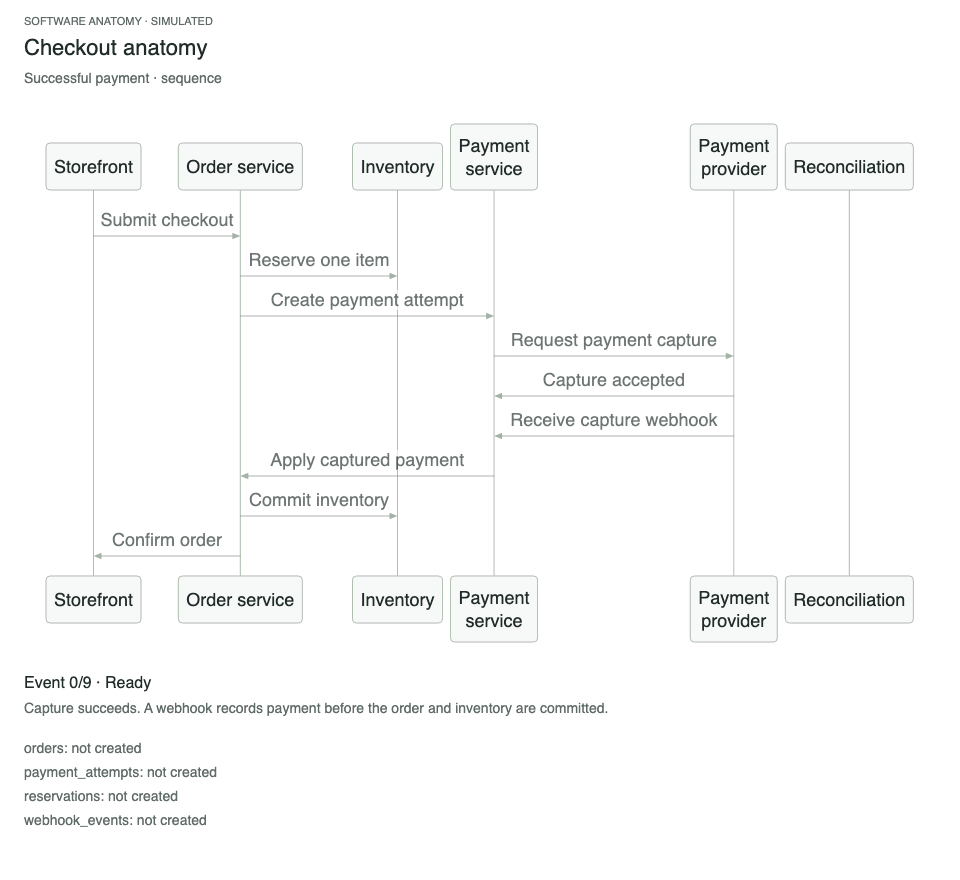
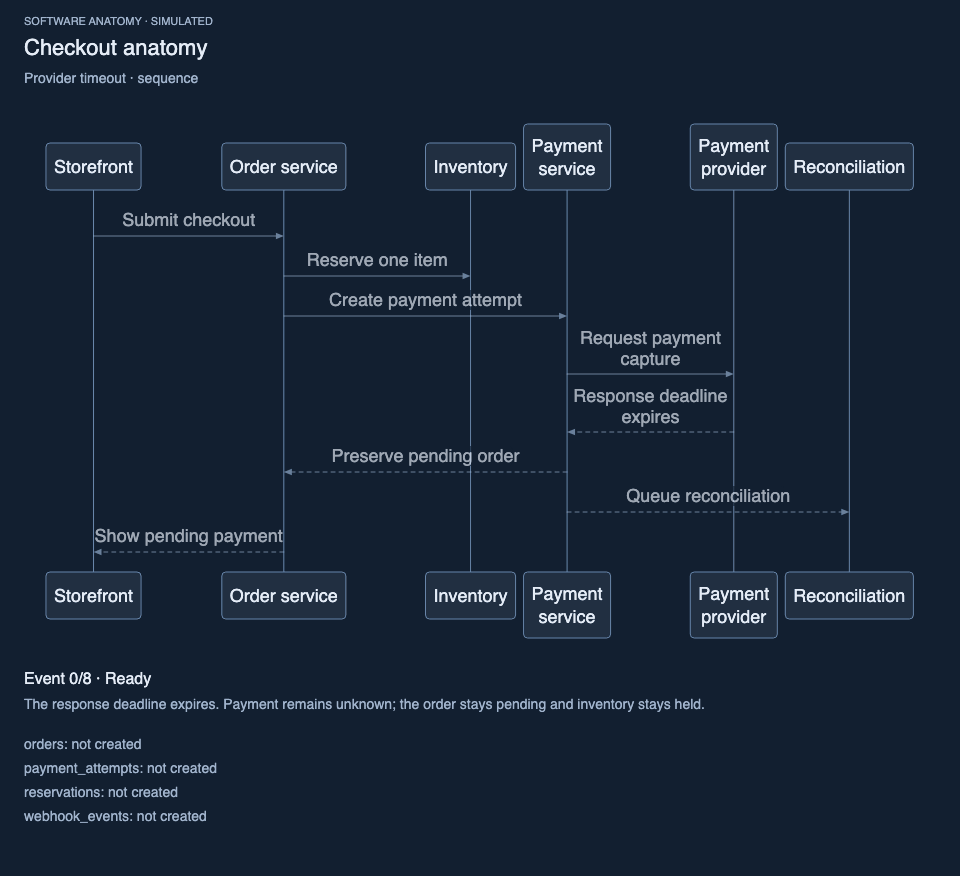

Checkout anatomy
Capture, callback, inventory commit. Then let the response deadline expire and inspect what remains unknown.
- Components
- 6
- Record types
- 4
- Scenarios
- 2
REAL SOFTWARE PROCESSES / MADE EXPLORABLE
A request, its messages, and the records it changes. Explore architecture, sequence and data views built from one replayable model.
Open source. Runs in your browser. No account or API key.
Choose a scenario. Step through an event. Switch views without losing your place.
TRY THE WORKING EXAMPLES
Every example is authored teaching data. The system replays explicit events; it makes no calls to a real payment provider, queue or database.
Capture, callback, inventory commit. Then let the response deadline expire and inspect what remains unknown.
Tenant access, an outbox, at-least-once delivery, reconciliation, accounting and a refund that requires manual review.
DESIGN FOR THE DESTINATION
A wide diagram squeezed into a document becomes tiny text. Supply the usable width and height first. Reflow before scaling; use panels when the content cannot fit.
Compare the 650 px document example →SVG · 2× PNG · GIF · offline HTML
Auto / Light / Dark throughout.
TAKE THE EXPLANATION WITH YOU
Export a clean diagram or explanation card with captions and record state. GIFs keep one layout throughout the replay, including the final-state hold.
Payment captured, inventory committed, order confirmed.
Download Neutral / Light GIF ↓
Payment pending, inventory held, reconciliation queued.
Download Ocean / Dark GIF ↓
BUILT TO WORK WITH YOUR AGENT
Use the JSON CLI from any terminal-capable agent, or connect the local MCP stdio server. No model-provider key or Codex-only plugin is required.
GitHub Pages hosts this static demo. MCP runs locally.
npx skills add NanFengCheong/software-anatomygit clone https://github.com/NanFengCheong/software-anatomy.git
cd software-anatomy
npm ci
node scripts/mcp-server.mjsTools: examples, validation, Mermaid source, SVG rendering and offline HTML. Built artifacts return as MCP resources.
One representative record per entity. Explicitly authored panels and scenarios. No automatic graph partitioning or live enterprise guarantees. Inspect and adapt the model before using it as a system specification.